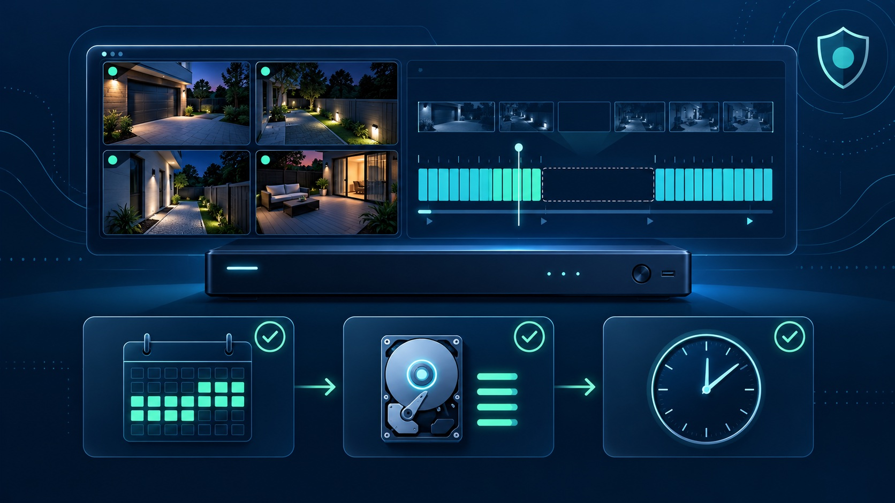
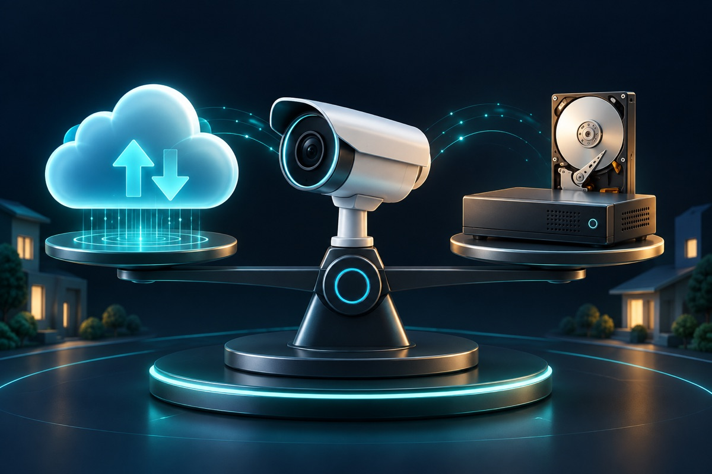
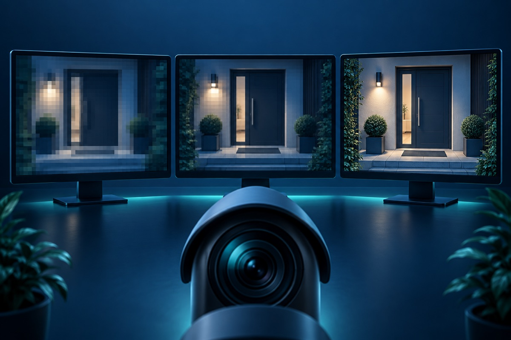

There is no single retention period that fits every camera system. A useful target starts with a practical question: how long could pass before you discover an incident and need to review it? A home watching deliveries may have a different discovery window than an apartment manager investigating a delayed resident report or a business reviewing an inventory discrepancy.
Once that window is clear, the installer can estimate storage, verify it with real footage, and leave enough margin for busy scenes. This is more dependable than buying a drive first and accepting whatever number of days it happens to hold.
List the events the system is meant to document and how quickly each is normally noticed. Package theft may be reported the same day. Property damage, an access dispute, or missing inventory may surface later. Your target should cover the slowest realistic discovery window, plus time to review and export the clip.
Also identify any retention rule created by a contract, insurer, employer policy, industry requirement, or legal obligation that applies to your property. Requirements vary, so confirm them with the appropriate advisor rather than relying on a generic internet recommendation.
Continuous recording creates a predictable timeline and does not depend on a detection rule. Event recording can reduce storage use, but its value depends on placement, detection zones, sensitivity, lighting, and whether the event reached the recorder. A mixed plan is often more useful: continuous recording at critical entrances and event recording where the risk and scene allow it.
Do not reduce image quality until faces, actions, or vehicle details become unusable just to reach a longer headline retention number. Retention is only valuable when the saved footage answers the question that caused you to open playback.
Retention also creates an access-control responsibility. ONVIF's cybersecurity recommendations call for individual accounts, limited privileges, secure networks, current firmware, and logging. For a business or shared property, decide who may view live video, search recordings, export clips, or change retention settings. Avoid shared administrator passwords.
Recheck the oldest available footage whenever cameras are added, resolution or frame rate changes, continuous recording is enabled, or a drive is replaced. A recorder that once held the intended history may fall short after an upgrade. Our recorder troubleshooting guide explains how to check schedules and storage status without formatting a drive.
Tech Secure 360 can audit an existing recorder, estimate storage from actual streams, and plan a camera or recorder upgrade in Los Angeles. Call or text (747) 336-2737, or request a free estimate.

Check recording schedules, time, camera status, and storage without erasing footage.

Compare access, subscriptions, control, and failure points.

See when more resolution helps and what it changes.
Tell us about your place and we'll respond within one business day with a tailored plan and pricing. Or call us right now.
Your request is in. A Tech Secure 360 specialist will reach out within one business day. Need help now? Call (747) 336-2737.